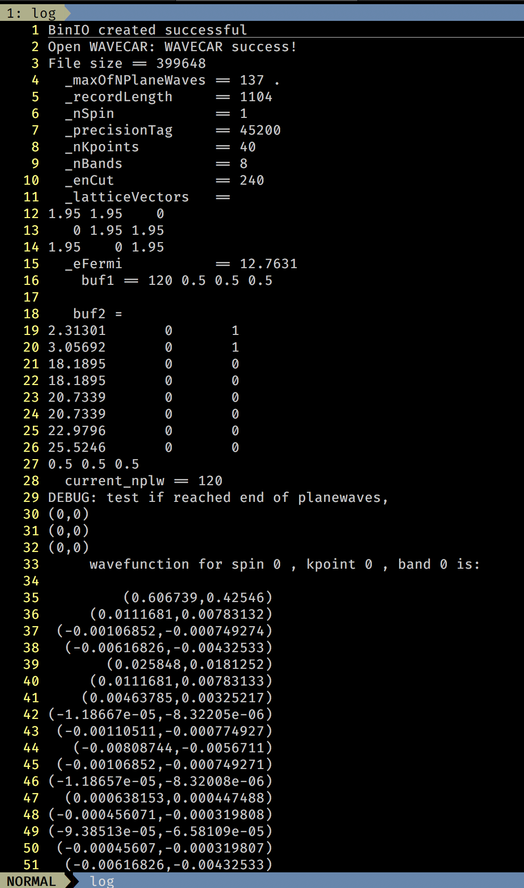

WAVECAR 数据结构的解析
我们知道，WAVECAR 是 VASP 计算完成后输出的一个二进制文件，它包含的信息用普通的文本编辑器不能直接查看。但有时一些拥有好奇心的人总想看看它里面到底储存了什么东东，于是闲得 X 疼的本人就本着生命不息、折腾不止的态度研究了一下 WAVECAR 的数据结构，终于写出了一个能解析 WAVECAR 的小程序，于是有了这篇博客。
WAVECAR 的基本结构
WAVECAR 本身是由多个等长的记录 (record) 组成的，没有特殊说明的情况下，WAVECAR 中大部分数据的存储类型为double(64-bit)，即使是整数也会被转换为双精度浮点数存储。
|
|
下面我们从源码的角度分析一下 VASP 在读写 WAVECAR 时都发生了哪些操作。
读写 WAVECAR 的函数
与文件读写有关的操作有一些定义在源码的 fileio.F 中（本渣读的是 VASP 5.4.1 的源码，但这种很基础的函数在版本更新时应该不会有太大变动吧），其中读写 WAVECAR 的函数有：
OPENWAV(IO, COM, EXT)CLOSEWAVREAD_TO_BUF(IU, IREC, IRECL_REAL, INBUF, IFAIL)WRITE_FROM_BUF(IU, IREC, IRECL_REAL, OUTBUF)INWAV_HEAD(WDES, LATT_INI, LATT_CUR, ENMAXI, ISTART, IU0)INWAV_FAST(IO, WDES, W, GRID, LATT_CUR, LATT_INI, ISTART, EFERMI)INWAV_ALTERNATIVE(IO, WDES, W, GRID, LATT_CUR, LREAD, EXT)OUTWAV_4(IO, WDES, W, LATT_INI, EXT)OUTWAV(IO, WDES, W, LATT_INI, EFERMI, EXT)
上面OPENWAV, CLOSEWAV, 分别是打开文件操作句柄同时确定写入的一些参数和关闭文件操作句柄，对应 C++ 里面的 fstream::open() 和 fstream::close() 操作；
READ_TO_BUF 和 WRITE_FROM_BUF
顾名思义，它们执行的是一个读取和写入一个 buffer 到文件的操作（对于相同的数据量一次性读写大量数据比多次读写，每次读写少量的数据效率更高）。函数参数中的 *BUF 就是读写用到的 buffer，由于 Fortran 语言的特性，它的函数传参默认为传引用，所以 READ_TO_BUF 函数执行完毕后数据已经放到了 INBUF 中了，这一点对从 C 系语言入门的本渣来说很不习惯。函数的 IREC 和 IRECL_REAL 分别表示 WAVECAR 中记录的位置和 real(q) 的数据在内存中占的大小。 IU 参数在本函数中没有作用（目测作者是想将文件指针作为参数传进来，但最后因为某种原因放弃了，现在 VASP 中 WAVECAR 的 unit 已经写死了，为 12）。
IU: 文件操作结构，此处无作用；IREC：此次读取/写入buffer的记录的编号；IRECL_REAL：此次读取/写入buffer中real(q)的长度；*BUF：读取、写入的buffer，是一个一维数组；IFAIL：读取时是否失败的标志。
INWAV_HEAD
这个函数读取 WAVECAR 的 header 部分，即 WAVECAR 中第二个记录的前 12 个double 型的值。这 12 个值按照顺序分别表示：
_nKpoints: 体系取了多少个 K 点，转换为int型；_nBands: 体系中有多少条能带，转换为int型；_enCut: 体系的截断能，无需转换；_latticeVectors: 接下来的⑨个double值构成了一个矩阵，它们表示体系在实空间中的格矢，按照行优先的顺序分别存放，无需转换；_eFermi: 体系的费米能级（在早期版本的 VASP 不会写入这个值）
事实上，这个函数还做了一些检查，比如用户提供的 NBAND 、 NKPOINTS 是否与 WAVECAR 中对应值一致等，由于现在这些都不重要，我们暂时略过。
WDES:WAVECAR的描述结构，包含了波函数的一些初步描述信息；LATT_INI: 从WAVECAR读取的格子结构；LATT_CUR: 从POSCAR读取的格子结构，程序会对LATT_INI和LATT_CUR作 diff 操作，如果两者有差别，则给出警告；ENMAXI: 从WAVECAR中读取的截断能（ENCUT）；ISTART: 是否为从头算，即是否舍弃WAVECAR重新计算波函数，手册中有详细说明；IU0: 文件句柄，各种错误信息、警告信息都将从这个句柄输出。
### INWAV_ALTERNATIVE
这个函数很迷，它只在 chi.F 中有调用，并且是在 LGW0 == true 时才调用，并且实质上只是调用了 INWAV_HEAD 和一些输出警告、帮助的函数，在 chi.F 中在对它的调用后面还有一些其他的读写函数，个人认为 INWAV_ALTERNATIVE 是在执行特殊计算任务时读取 WAVECAR 的函数，它与我们解析 WAVECAR 的任务关系不大。
INWAV_FAST
这个函数是读取 WAVECAR 的 主要函数 。
它首先读取 WAVECAR 的开头部分，获得以下三个值：
_recordLength:WAVECAR中每个记录的长度，应转换为int类型；_nSpin:WAVECAR中是否开启自旋，如果开启自旋，则上下两个自旋的波函数等将分别存放，应转换为int类型；_precisionTag:WAVECAR中平面波系数的精度标签，它决定了平面系数是使用complex<float>存储还是complex<double>来存储。这个标签应转换为int类型；
然后调用 INWAV_HEAD 获得体系的 header 信息。
最后，它将文件指针定位到第三个记录，并开始读取体系的能带、K 点的波函数信息。
从第三个记录开始，WAVECAR 的数据结构如下：
|
|
其中 (1) 处的记录读取 4 + 3*_nBand 个值，前四个值分别为：
current_nPlaneWave: 该 K 点波函数展开需要的平面波数量，转换为int类型；current_kVector: 该 K 点的坐标（倒空间），转换为 3 个double类型；
之后的 3*_nBand 个值构成一个 _nBand * 3 的矩阵，前两列分别表示该 K 点处各个能带的特征值（能量），由于特征值解出来可能是复数，所以这里用两列表示，第一列表示 band 的实部，第二列表示 band 的虚部，第三列表示每个能带的费米权重，即
Re(band[0]), Im(band[0]), fermiWeights[0];
Re(band[1]), Im(band[1]), fermiWeights[1];
... ... ...
(2) 处的记录就是每个 K 点每条能带波函数展开的平面波系数，系数的个数由前面得到的 current_nPlaneWave 决定。由于 WAVECAR 中占比最大的部分就是这部分，故设法减小文件的体积时便从这里开刀。还记得这个函数开头得到的 _precisionTag 吗？这里就派上用场了：
如果 _precisionTag == 45200 || _precisionTag == 53300 ，则后面的波函数展开的平面波系数就是由 complex<float> 类型存储，否则由 complex<double> 类型存储，即
|
|
因此， WAVECAR 共有 2 + nSpin * nKpoint * (1 + nBand) 条记录，每条记录的长度都是一样的。
其大部分参数和 INWAV_HEAD 一致，只多了一个 GRID
GRID: 格子的 mesh 结构，但在这个函数中不参与文件读写，暂时不需要了解它的作用。
OUTWAV 和 OUTWAV_4
这两个函数的功能几乎一致，只是 OUTWAV 比 OUTWAV_4 多了一个 EFERMI 的参数，很自然地 OUTWAV 将这个参数写在了 header 的最后，这也解释了为什么早期版本的 header 没有 _eFermi 这一项。至于函数的具体流程，读者只需按照 INWAV_FAST 的流程把读改成写即可，事实上源代码也确实是这样做的。
读到这里读者是否有个疑问， WAVECAR 是由连续的等长的记录组成的，这个记录的长度在读取时可以得到，那么在写入的时候如何确定？源代码中是这样确定这个数的：
|
|
翻译成人话就是使每条记录都不溢出的最小值，（我在实现小程序时直接使用 _recordLength = (_maxOfNPlaneWaves + 1) / 2 来决定平面波系数数组的大小，这样虽然会浪费一点内存，但省去了很多麻烦）。
IO: 文件读写的句柄结构，包含多个文件读写的句柄；WDES: 波函数的描述结构，这里只用到了里面对于_nBand、nSpin、_nKpoint以及_enCut等值（未全列出）；W: 储存band、fermiWeight等值的结构LATT_INI: 格子的描述结构，包含格子在实空间的格矢；EFERMI: 费米能级；EXT: 这是个可选参数，表示写入前WAVECAR是否存在。
WAVECAR 解析小程序的实现
显然我们要构建一个类，这个类要包含至少两部分内容：
WAVECAR的 header 部分；WAVECAR的 body 部分。
header 部分直接按照 INWAV_FAST 或者 OUTWAV 给出的顺序读取即可：
|
|
body 部分与之类似：
|
|
需要的操作也很简单：
|
|
按照上文和源码稍微修改一下基本就能实现了，限于篇幅原因，这里不贴出所有代码了（
输出的效果如图：

2019-1-15 更新: 已实现的波函数解析程序请见这里
- 原文作者：Ionizing
- 原文链接：https://ionizing.page/post/2018-12-31_WAVECAR-parsing/
- 版权声明：本作品采用知识共享署名-非商业性使用-禁止演绎 4.0 国际许可协议进行许可，非商业转载请注明出处（作者，原文链接），商业转载请联系作者获得授权。